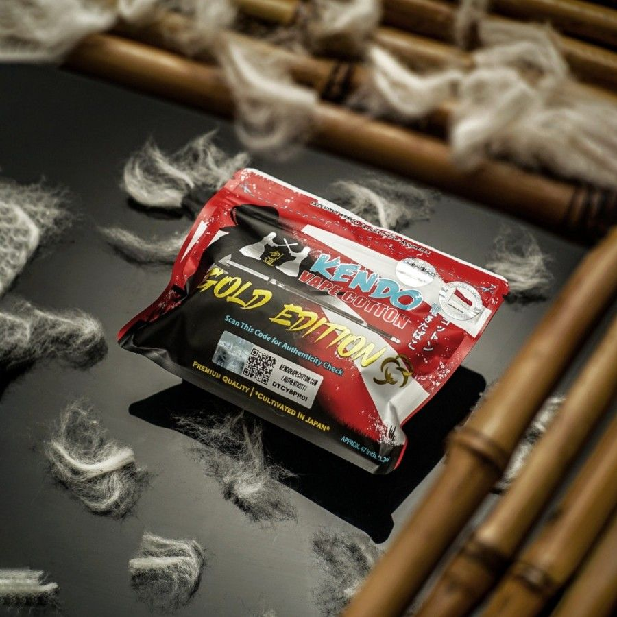

Apa itu cotton?
Cotton
Kapas vape adalah komponen penting dalam vape yang berfungsi sebagai media pengantar rasa liquid menjadi uap. Kapas vape tergabung dalam rangkaian atomizer, alat yang mengubah liquid menjadi uap. Kapas vape memiliki karakteristik tersendiri, sehingga penting untuk memilih kapas yang sesuai dengan perangkat vape. Kapas yang tepat akan menghindari rasa tidak enak atau kurang nyaman saat vaping.
Beberapa hal yang perlu diperhatikan saat memilih kapas vape: Bahan: Kapas organik alami tanpa pemutih dan bahan kimia lainnya Wicking: Kapas yang meresap dengan cepat dan optimal Cloud: Kapas yang menghasilkan cloud yang lebih tebal Flavor: Kapas yang membuat flavor lebih terasa Katun merupakan bahan penyerap yang umum digunakan untuk kapas vape. Katun memberikan keseimbangan yang baik antara kualitas rasa dan kinerja penyerap. Salah satu indikator bahwa kumparan vape perlu diganti adalah rasa terbakar saat menghisapnya. Hal ini terjadi karena kapas di dalam kumparan terbakar atau rusak seiring waktu.
Kembali ke Halaman Utama